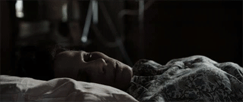

| # | Значение | Gif |
|---|---|---|
| Город | Мариуполь |  |
| Место | Кинотеатр Multiplex | |
| Дата | 14.02.2022 | |
| Время | 21:30 | |
| Стоимость | 80 | |
| Возраст | 14+ | |
| Количество билетов | 136 | |
| # | Значение | Gif |
Фильм начинается в 1968 году с краткого вступления, где охотники за призраками и исследователи паранормальных явлений Эд и Лоррейн Уоррен занимаются делом Аннабель Кэссе. Две девушки-воспитательницы рассказывают им, что в их квартире когда-то умерла девочка по имени Аннабель и её призраку понравилась кукла одной из девушек, и она хочет в неё вселиться, чтобы жить с девушками. Воспитательницы, в силу своей доброты, («мы же няни») разрешают призраку сделать это, после чего, однажды, придя домой, они обнаруживают куклу не на своём месте, вся комната исписана красным мелком, их совместные фотографии разбиты, а в комнате присутствует надпись «Скучали по мне?». Одна из девушек выкидывает Аннабель в мусорный бак, несмотря на уговоры другой оставить её. Через несколько дней, ночью, зловредная кукла возвращается. Эд и Лоррейн убеждают девушек, что никакой Аннабель нет, что этот призрак просто манипулирует девушками, пытаясь вселиться в одну из них. Уоррены забирают куклу с собой и помещают её в своё хранилище, где собраны разные предметы, использовавшиеся в магических обрядах и т. д. Объясняя одному репортёру, почему они не сожгут эти вещи, Эд Уоррен говорит, что «порой лучше держать джинна в бутылке».
Затем действие переносится в 1971 год в Харисвилль, где семья Перрон — отец Роджер, мать Кэролин и их пять дочерей: Андреа, Нэнси, Кристин, Синди и Эйприл, — переезжает в новый дом. Поначалу всё идёт хорошо: семья обустраивается, девочки рады, родители тоже, но только собака Сэди не желает заходить в дом. Девочки любят играть в жмурки и однажды играя они случайно находят заколоченный досками подвал дома. После этого в доме начинают происходить странности. Всё начинается с малого: собака умирает, часы останавливаются на отметке 3:07 ночи, в доме понижается температура и по ночам пахнет тухлятиной, птицы, пролетая над домом, падают замертво со свёрнутой шеей, девочек по ночам кто-то хватает за ноги, Кэролин обнаруживает у себя на теле синяки и не может понять, откуда они взялись. На фоне всего этого Синди Перрон по ночам ходит во сне и каждый раз заходит в комнату к её старшей сестре Андреа, где бьётся лбом о створки старинного шкафа. Затем Кэролин слышит, как её самая младшая дочь Эйприл с кем-то разговаривает, а сама Эйприл сообщает матери, что она разговаривала с Рорри — мальчиком, который живёт в старой музыкальной шкатулке, которую она нашла в доме. Позже Кэролин играет с дочерью в жмурки и заходит в комнату Андреа, где двери шкафа, о который по ночам бьётся Синди, сами открываются и из вещей высовываются руки и начинают хлопать. Кэролин, слыша это, идёт на звук и считает, что поймала Эйприл, однако поискав в шкафу ничего не находит: девочка пряталась в соседней комнате.
Спустя какое-то время Роджер уезжает в командировку. Ночью Кэролин, уже ложась спать, слышит хлопки и считает, что девочки решили поиграть. Но они все спят, а затем фотографии, повешенные вдоль стены, резко падают на пол. Кэролин, слыша звуки, идёт в подвал, и ей кажется, что там кто-то есть. Когда она собирается выйти из подвала, дверь резко захлопывается, затем лопается лампочка и Кэролин слышит детский голос, который предлагает ей поиграть в жмурки, после чего чьи-то руки хлопают в ладоши. Тем временем, Синди опять приходит во сне в комнату Андреа и бьётся головой о шкаф. Андреа кладёт сестру рядом с собой, однако в ту же секунду шкаф опять начинает стучать, а затем Андреа видит, что на шкафу сидит старуха в грязной ночнушке, с растрёпанными волосами и кровью во рту. Старуха спрыгивает со шкафа на Андреа, и та начинает кричать. Роджер, приехавший к этому времени, слышит крики и бежит на них. Освободив сначала свою жену, он бежит на крики Андреа. Забежав в комнату Роджер видит только Андреа, дёргающуюся на полу. Потом другая дочь Перронов Кристина видит у себя в комнате ночью нечто, что словесно угрожает её семье. Деморализованная Кэролин посещает лекцию Эда и Лоррейн и рассказывает им обо всём. Приехав к Перронам, Уоррены понимают, что в доме не один призрак, а несколько, но один из них полон ненависти. Также Лоррейн, заглянув в шкатулку Эйприл, удаётся разглядеть Рорри. Она и Эд приходят к выводу, что в доме нужно провести обряд экзорцизма, но нужны доказательства, чтобы получить разрешение на его проведение.
Исследуя историю дома, Уоррены выясняют, что он был построен в 1863 году Джетсеном Шерманом. Его жена Батшиба была родственницей Мэри Таун Эсси, которая была одной из жертв салемского процесса над ведьмами. У Батшибы и Джетсона родилась дочь. На седьмой день после рождения дочери Батшиба принесла её в жертву сатане, бросив ребёнка в камин. Потом Батшиба залезла на дерево возле озера, провозгласила любовь к сатане, прокляла всех, кто попытается завладеть её землёй, и повесилась. Время её смерти — 3 часа 7 минут ночи. Также в окрестностях дома (которые раньше были во владениях Шерманов) жила когда-то женщина по фамилии Уокер, и у неё был сын Рорри, который пропал в лесу, а сама мать убила себя в подвале. Также молодая служанка, которая была в этом доме, тоже покончила с собой. Затем Эд, прослушивая запись интервью с Перронами, обнаруживает, что голос Кэролин не записался. Пока Эд и Лоррейн обсуждают это, запись самовоспроизводится, но теперь вместо голоса Кэролин Уоррены слышат чьё то рычание и крики, а часы останавливаются на 3 часах и 7 минутах. На следующий день Уоррены вместе со своим ассистентом Дрю и офицером полиции Бредом приезжают к Перронам и расставляют по дому специальную аппаратуру слежения, но в первый день ничего сверхъестественного не засекают.
На следующий день, когда Кэролин решает отдохнуть у себя в спальне, Лоррейн видит в окне её комнаты ту самую старуху, которая была в комнате Андреа. Она спешит к Кэролин, но Батшиба, прежде чем исчезнуть, успевает чем-то заразить последнюю. Кэролин, однако, ведёт себя так, будто ничего не случилось. Позже, ночью Бред сталкивается с призраком служанки. Затем Синди опять ходит во сне, и аппаратура фиксирует что-то, что идёт рядом с ней. Синди заходит в комнату Андреа, после чего дверь захлопывается. Когда её открывает, в комнате пусто, но позже девочку находят в тайнике за шкафом (пустое пространство между перегородками). Эйприл говорит, что это место, где Рорри прячется, когда ему страшно. Лоррейн вместе со шкатулкой пролезает в дыру и обнаруживает ещё несколько игрушек и верёвку для повешения. Тут доски не выдерживают её веса, и она падает между стенами в подвал. Там, используя шкатулку, Лоррейн видит в отражении женщину Уокер и труп её сына, Рорри. Женщина, держа нож и плача, говорит: «Она заставила меня это сделать». Затем Лоррейн видит повешенный труп и в ужасе убегает, попутно теряя медальон, который ей подарила дочь. Выбежав из подвала, Лоррейн сообщает, что всё поняла: призрак Батшибы заставляет родителей убивать своих детей. Синяки на теле Кэролин — последствия воздействия Батшибы. Буквально в ту же ночь Батшиба, с помощью медальона Лоррейн, проникает к ним в дом и пугает дочь Эда и Лоррейн куклой Аннабель, но вреда ей причинить не успевает.
Перроны временно останавливаются в мотеле. Отлучившись на некоторое время, Роджер обнаруживает, что Кэролин забрала Кристин и Эйприл и уехала в неизвестном направлении. Лоррейн понимает, что в Кэролин окончательно вселилась Батшиба, и та везёт своих дочерей обратно в проклятый дом. Кэролин пытается заколоть ножницами Кристин, но Эд, Лорейн, Роджер, Дрю и Бред успевают спасти ребёнка. Одержимую пытаются вывести из дома, но на выходе на её теле из ниоткуда появляются большие гематомы — Батшиба не хочет, чтобы Кэролин покинула дом. Её связывают, и Эд решает самостоятельно провести ритуал изгнания, так как нет времени ждать священника. В это время Дрю ищет пропавшую Эйприл и находит её под полом кухни. Он кричит об этом Роджеру, но Кэролин, успешно вырвавшись, хватает ножницы и убегает в подвал под кухней к Эйприл. В последние секунды у Эда получается отвлечь внимание Кэролин от Эйприл, а Лоррейн убеждает Кэролин бороться. Кэролин побеждает Батшибу и возвращает себе тело. В последних кадрах фильма Эд Уоррен ставит шкатулку к себе в подвал, а Лоррейн сообщает ему, что Ватикан дал разрешение на проведение экзорцизма в доме. Уоррены уходят из комнаты, а камера поворачивается к шкатулке, у которой приподнято зеркало и играет музыка.